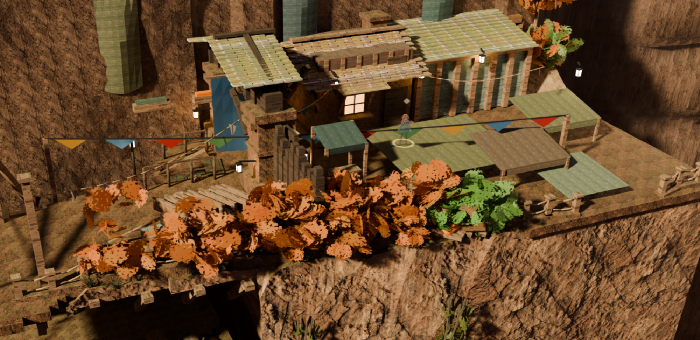

Scene red-team — dellhollow
run 20260808-170205-calib · judge gemini:gemini-3.6-flash (pinned) ·
12 plates · naive + checklist · naive N=3 ·
generated 2026-08-08T17:07:07.570Z by tools/scene_redteam.mjs · plates baked 2026-08-06T22:15:20Z .. 2026-08-08T16:50:40Z
1 The prompts, verbatim
Exactly what each judge call was asked (judge gemini:gemini-3.6-flash, pinned) —
read these first; everything below is these prompts' output. The naive prompt is fixed for the whole
run; the checklist and sceptic prompts are templates filled per plate — shown here filled with this
run's own data. The style paragraph switches between art and blockout mode; this run used
art mode, and that is the version shown.
Stage 1 — the naive critic (every plate, each of the N looks)
You are a first-time player. The image is one frame of a video game, exactly what is on
screen. You have never been here, you have no map, and nobody has told you anything.
Critique this frame. Report anything that would make the place HARD TO UNDERSTAND or
HARD TO PLAY. Use exactly these category tokens:
navigation — you would not know where to go, or the way on is ambiguous
occlusion — something blocks your understanding of the space
geometry — incomplete, stray, floating, clipping, or plainly ugly geometry
exit — a door or way out that does not read as a door or a way out
immersion — floating objects, z-fighting, wrong scale, anything that breaks belief
The scene is a finished hand-stylised illustration; a painterly or simplified look is
the intended art style and is not a problem in itself.
RULES. Report only things you can actually point at in this image. Do NOT invent
problems to fill the list, and do NOT list matters of taste. If the frame is fine,
return an empty list — that is a valid and useful answer. At most 6 findings.
severity: 3 = a player would be stuck or would think the game is broken, 2 = clearly
wrong but survivable, 1 = a blemish.
Answer with JSON only, in this exact shape:
{"findings":[{"category":"occlusion","where":"a few words locating it in the frame",
"bbox":[x0,y0,x1,y1],"severity":2,"desc":"one sentence"}]}
bbox is in normalised image coordinates: x 0 at the left edge and 1 at the right, y 0
at the top edge and 1 at the bottom.Stage 1 — the checklist auditor (filled for plate "quay-west", 16 items derived from the map/ownership contract)
You are auditing one frame of a video game. The designer says the things listed below
are in this shot and that a player should be able to find them. For EACH item, decide
which of these four is true, using the exact token:
FINDABLE a first-time player would find it AND know what it is
OCCLUDED it is hidden behind something else (say what hides it)
VISIBLE-BUT-ILLEGIBLE part of it is on screen, but it does not read as what it is
— too small, too dark, merged into its background, cropped,
or it looks like some other kind of thing entirely
ABSENT you cannot see it anywhere in this frame at all
Items marked [QUALITY] are different: they are already in frame, so findability is
not the question — how well they HOLD UP is. For those items, and ONLY those, answer
with one of these tokens instead:
CONVINCING it holds up — it reads as the real thing at this scene's own hour
WEAK it reads, but visibly falls short — say exactly what falls short
FAILING it breaks the picture — it reads as a flat fill, a painted plane, or
an unfinished edge of the world
For a [QUALITY] item, put the bbox around the specific area your judgment rests on,
and make "desc" a JUDGMENT with a reason — never a neutral description of what is
there.
The scene is a finished hand-stylised illustration; a painterly or simplified look is
the intended art style and is not a problem in itself.
YOU ARE NOT TOLD WHERE ANYTHING IS. Do not guess a position to be helpful: if you
cannot find it, ABSENT is the correct and useful answer. If you DO find it, give the
bbox where you see it so your reading can be checked against the model.
Two rules that keep the answers useful. (1) Names like "shelf-west" are the designers'
internal names for other areas; a player never sees them, so NEVER report a missing
sign, label or name as a problem — judge only whether the thing itself can be found and
recognised for what it is. (2) Judge what is DRAWN, not what a game would normally add:
no icons, markers or waypoints exist in this art and their absence is not a finding.
Items:
1. Cookhouse — a building (warm windows over the gorge at night; the tavern-warmth hub)
2. Notice board — a prop
3. Harbor Deck — a plaza (social core; night-on-the-quay scene)
4. Deep Stairs (head) — a stairhead (quiet corner of the quay; the discreet route down. Hidden from player map.)
5. Market stalls — a stalls
6. the route between Harbor Deck and Cookhouse — a deck (RE-ROUTED 2026-08-02d with the door (see the cookhouse landmark's _redline): the approach hugs the same outer rail as the deep-stairs deck edge, so it reaches the north front instead of crossing the market to the building's blind south side. THE WAYPOINT IS LOAD-BEARING, not decoration: scenegraph_derive's streetDir takes the LAST waypoint as the street direction, and the return spawn is the doorstep plus 2.9 m along it. Left at (46.9,12) the spawn landed at (42.3,15.2) — inside the cookhouse's own footprint — and only the off-network search would have saved it.)
7. the route between Harbor Deck and Notice board — a deck
8. the route between Harbor Deck and Deep Stairs (head) — a deck (hugs the outer rail away from the market bustle)
9. the route between Harbor Deck and Market stalls — a deck
10. the route between Deep Stairs (head) and Deep Stairs (foot) — a stairs (the discreet night route: a long zigzag bolted to the cliff face (fixes the 45-degree straight flight))
11. a door / entrance you can go through ("Enter Cookhouse")
12. the way out of this area on foot towards lockhead — a path that carries on out of the frame
13. the way out of this area on foot towards weave — a path that carries on out of the frame
14. the way out of this area on foot towards deep-stairs — a path that carries on out of the frame
15. the way out of this area on foot towards loop-stairs — a path that carries on out of the frame
16. [QUALITY] The world at the frame edges — the terrain, backdrop and distant geometry BEYOND the built set, at the borders of the picture. Does the world hold up all the way to every edge of the frame, or does it visibly end, thin out, or turn rough and unfinished somewhere inside the frame (bare terrain, abrupt cut-offs, missing backdrop)? Say where.
Answer with JSON only, one entry per item, in order:
{"items":[{"n":1,"verdict":"FINDABLE","where":"a few words","bbox":[x0,y0,x1,y1],
"desc":"one sentence saying how you recognised it, or what hides it, or why it does
not read"}]}
bbox is normalised: x 0 left to 1 right, y 0 top to 1 bottom. Use null when ABSENT.Stage 2 — the naive sceptic (shown with one real claim from this run; the live call lists every claim on the plate)
You are the sceptic on a game art review, and your job is to protect the team from
wasted work. Below are criticisms somebody has made of THIS frame. For each one,
decide honestly whether it is a REAL problem for a player, or whether it is a
misreading of the picture, a matter of taste, or simply normal for this art style.
UPHOLD only if you can find the same thing in the frame yourself AND it would really
cost a player something. REFUTE if the thing described is not there, is not what the
critic thought it was, is normal for the style, or does not matter. Do not be polite:
refuting a weak criticism is the useful answer.
The scene is a finished hand-stylised illustration; a painterly or simplified look is
the intended art style and is not a problem in itself.
Claims:
1. [immersion] vertical banners on the right cliff wall: The vertical banners hanging on the cliff wall are embedded directly into the rock face without visible mounting poles, ropes, or anchors.
Answer with JSON only, one entry per claim, in order:
{"verdicts":[{"n":1,"verdict":"upheld","why":"one sentence"}]}Stage 2 — the checklist sceptic (contract-aware: told the object's existence is not in question; shown with one real claim)
You are the sceptic on a game art review. The claims below are about objects that the
DESIGNER'S OWN MAP says really are in this shot. That they belong here is NOT in
question, and "it is not there" / "this area would not have one" / "expecting it is
arbitrary" are NOT valid refutations. The only question is whether the claim about how
well a player can FIND or READ the object is fair.
UPHOLD if, looking at the frame yourself, you agree the object is genuinely hard to
find, hidden behind something, or does not read as the kind of thing it is. REFUTE if
you can point straight at it and it is plainly legible, or if the complaint is really
about a missing sign, label, icon or name rather than about the art.
Claims tagged [quality] are JUDGMENTS that a sky, a backdrop, the world at the frame
edges, or a water surface fails to hold up as art (a flat fill, a painted plane, an
unfinished edge of the world). For those, UPHOLD if your own look at the frame agrees
it falls short in the way described; REFUTE only if the surface genuinely holds up in
this frame. "It is normal for games" is not a refutation of a quality claim.
The scene is a finished hand-stylised illustration; a painterly or simplified look is
the intended art style and is not a problem in itself.
Claims:
1. [immersion] upper left fog border: The world at the frame edges: WEAK — Dense cloud layer cuts off somewhat abruptly against cliff geometry.
Answer with JSON only, one entry per claim, in order:
{"verdicts":[{"n":1,"verdict":"upheld","why":"one sentence"}]}2 How well does this work?
On the user's own five complaints, the judge found
2/5 on the exact plate (
5/5 counting any plate that holds the same object) and raised
61 other surviving findings.
Keyword matcher only — no hand adjudication has been written for this run.
The gate is recall against complaints the user made by hand, before this tool
existed. The judge is never told what the complaints are; it is shown the shipped plate that holds the
object and asked to criticise it. Two numbers because there is a real ambiguity: exact plate counts
the finding only on the one shot whose frame most nearly holds what the user circled; any plate
counts it on any shot holding the same object. Not reproducible, and said plainly: all five
references were screenshot from a free orbit camera, from angles no shipped plate holds — so this
measures whether the same defect is catchable from the shipped frames, not whether the judge
can reproduce the user's screenshots.
| The user's frame | The complaint | Naive mode |
Checklist mode |
|---|
 user_entrance_ref.png |
Canopy wall across the entrance A wall of tree canopy stands between the camera and the road into town — the only way IN is behind foliage.
plate under test: gate (also shelf-west) |
MISS | HIT (other plate) “the route between Valley Gate and Inn: ABSENT — The specified straight stair flight path is not visible in this view.”— shelf-west, navigation |
 user_gatestair_ref.png |
The gate stair is occluded / hard to navigate "Staircase very occluded, hard to navigate."
plate under test: gate (also shelf-west, deep-stairs) |
HIT (other plate) “Harsh, pitch-black cast shadows completely obscure the cliff stairs and pathway, hiding where the player can walk.”— deep-stairs, occlusion “Deep shadow completely hides the path ahead, making it ambiguous whether the staircase leads to a usable upper level or a dead end.”— deep-stairs, navigation | HIT (other plate) “the route between Valley Gate and Inn: ABSENT — The specified straight stair flight path is not visible in this view.”— shelf-west, navigation |
user_gatestair_ref.png |
Stray / weird cliff geometry "Stray / weird cliff geometry."
plate under test: gate (also shelf-west, crossing, waterfront) |
HIT “The tree trunk cuts straight into the cliff face with an unblended, sharp intersection and no visible root system.”— gate, geometry “The trees on the right wall clip directly out of the vertical rock face without realistic trunks or visible roots.”— gate, geometry “Sharp, unrefined low-polygon cliff geometry with severely stretched textures protrudes prominently into the foreground.”— gate, geometry “An untextured white geometric plane is visible cutting into the terrain at the bottom-right corner.”— crossing, geometry + 1 more surviving matches on waterfront | HIT “The world at the frame edges: WEAK — Dense cloud layer cuts off somewhat abruptly against cliff geometry.”— gate, immersion |
 user_ropefence_ref.png |
Solid plank screens where a rope fence belongs "Unnecessary occlusion, replace with rope fence."
plate under test: quay-west (also shelf-east, waterfront, lockfive, weave, crossing) |
HIT (other plate) “An untextured solid white triangle of geometry protrudes into the bottom right corner of the screen.”— crossing, geometry “The wooden boat structure clips heavily through the solid grey wall on the right.”— waterfront, geometry | HIT (other plate) “the route between Weave huts and Keepers' Cottage: ABSENT — No high sagging plank bridge spanning over the basin is present in this view.”— crossing, navigation |
 user_waterfront_ref.png |
Waterfront: confusing / incomplete geometry, walking on water "Extremely confusing / incomplete geometry, walking on water. Simplify and tidy up please."
plate under test: waterfront (also lockfive, fishdock, boatyard, crossing, north-landing) |
HIT “A wooden plank floats disconnectedly on the water surface without buoyant interaction or support.”— crossing, immersion “Walkway planks and stair structures are disconnected and float without clear structural support.”— crossing, geometry “A flat wooden platform floats independently on the water surface without visible supports or buoyant structure.”— crossing, immersion “The wooden roof slats on the upper-right structure are unattached and floating above the frame without visible fasteners or beam support.”— boatyard, geometry + 17 more surviving matches on boatyard, waterfront, fishdock, lockfive, north-landing | HIT “Cargo Winch (foot): ABSENT — The cargo winch machine is not present anywhere on the lower quays or decks in this frame.”— waterfront, navigation |
Stage 2 refuted 20 of 115 raw findings across this run
(17%). Refuted claims are kept in
refuted.json; a red MISS above with "matches raised but REFUTED" means the judge saw the
thing and the sceptic threw it away — that is a stage-2 miscalibration, not a stage-1 blindness.
3 The sweep — surviving findings, triaged
95 survivors from 115 raw findings over 12
plates. Deduped across shots: a finding seen on more than one plate is listed once and says so.
Already known / tracked 23
The judge re-found something the repo already knows about. Useful as a confirmation that the instrument sees real defects; not new work.
checklist
navigation
sev 3
shelf-west
the route between Valley Gate and Inn: ABSENT — The specified straight stair flight path is not visible in this view.
where: none
ray census: occluded (plate is 5.42 m nearer), 95 px tall at 21.87 m
verify: upheld by adversarial-judge:checklist — The straight stair path connecting the valley gate to the inn is not visible anywhere in this frame.
checklist
navigation
sev 3
shelf-west
the way out of this area on foot towards gate: ABSENT — The egress route toward the gate does not extend out of frame here.
where: none
ray census: occluded (plate is 5.1 m nearer), 100 px tall at 20.65 m
verify: upheld by adversarial-judge:checklist — No foot route exiting towards the gate is visible within this camera angle.
checklist
navigation
sev 3
shelf-west
the way out of this area on foot towards shelf-east: ABSENT — No path exiting toward shelf-east appears in this frame.
where: none
ray census: clear, 70 px tall at 29.4 m
verify: upheld by adversarial-judge:checklist — An exit path heading toward shelf-east is not shown in this framed scene.
naive
navigation
sev 2
1/3 looks
quay-west
The blocky stone staircase descends into absolute darkness and an ambiguous crevasse, making it unclear if it is a playable path or a dead end.
where: bottom right staircase
verify: upheld by adversarial-judge:naive — The stone steps at the bottom right descend directly into deep shadow and an obscured crevasse, making path readability ambiguous.
checklist
navigation
sev 3
quay-west
the way out of this area on foot towards lockhead: ABSENT — There is no identifiable path or exit leading towards lockhead visible in this frame.
ray census: clear, 59 px tall at 35.01 m
verify: upheld by adversarial-judge:checklist — There is no clearly identifiable path or exit marked or visually readable as leading towards lockhead in this view.
checklist
navigation
sev 3
quay-west
the way out of this area on foot towards weave: ABSENT — There is no identifiable path or exit leading towards weave visible in this frame.
ray census: occluded (plate is 3.2 m nearer), 68 px tall at 30.27 m
verify: upheld by adversarial-judge:checklist — There is no clearly identifiable path or exit marked or visually readable as leading towards weave in this view.
naive
immersion
sev 1
1/3 looks
crossing
A wooden plank floats disconnectedly on the water surface without buoyant interaction or support.
where: water surface near the dock
verify: upheld by adversarial-judge:naive — A flat wooden plank sits completely unanchored on top of the water surface near the dock without any structural support or water displacement.
Blender -b tools/blends/dellhollow-master.blend -P tools/geometry_audit.py -- --region 99.9,106.8,30.7,37.6
naive
geometry
sev 1
1/3 looks
crossing
Walkway planks and stair structures are disconnected and float without clear structural support.
where: lower-left wooden pier structure
verify: upheld by adversarial-judge:naive — Several planks and wooden stairs in the foreground pier structure are detached and float mid-air without supporting posts.
Blender -b tools/blends/dellhollow-master.blend -P tools/geometry_audit.py -- --region 69.3,87.3,20.9,38.8
checklist
navigation
sev 3
crossing
+2 more shots
Dam Crest Gate: VISIBLE-BUT-ILLEGIBLE — The gate structure on the high dam walk is obscured in deep shadow under its roof frame.
where: top-right elevated walkway roof
ray census: clear, 58 px tall at 35.5 m
verify: upheld by adversarial-judge:checklist — The structure under the elevated walkway roof at the top right is cast in pitch-black shadow, rendering any gate details completely illegible.
also on: lockfive, north-landing
naive
occlusion
sev 2
1/3 looks
deep-stairs
Harsh, pitch-black cast shadows completely obscure the cliff stairs and pathway, hiding where the player can walk.
where: deep shadow across the upper cliff staircase
verify: upheld by adversarial-judge:naive — Harsh, unlit cast shadows completely black out the cliff steps on the upper right, obscuring the walkable surface.
naive
geometry
sev 1
1/3 looks
deep-stairs
The long descending wooden staircase lacks supporting beams underneath, appearing to float unsupported over the drop.
where: floating wooden staircase steps in the center
verify: upheld by adversarial-judge:naive — The individual wooden stair treads in the center descend over the drop without any stringers or support beams beneath them.
Blender -b tools/blends/dellhollow-master.blend -P tools/geometry_audit.py -- --region 33.1,47.8,17.9,23
naive
geometry
sev 1
1/3 looks
deep-stairs
The wooden walkway planks clip awkwardly into the rocky terrain and float above the ground level without proper support posts.
where: sloped wooden plank bridge at bottom center
verify: upheld by adversarial-judge:naive — The sloped wooden plank walkway at the bottom center hovers in mid-air above the ground without vertical support legs.
Blender -b tools/blends/dellhollow-master.blend -P tools/geometry_audit.py -- --region 31.7,44.6,18.8,29.9
naive
immersion
sev 2
1/3 looks
deep-stairs
The staircase steps float in mid-air without structural support columns connecting them to the ground or wall.
where: center wooden staircase
verify: upheld by adversarial-judge:naive — The central staircase steps float individually in space without structural attachments connecting them to the surrounding terrain or structure.
Blender -b tools/blends/dellhollow-master.blend -P tools/geometry_audit.py -- --region 32.7,49.1,17.6,29.2
naive
navigation
sev 2
1/3 looks
deep-stairs
Deep shadow completely hides the path ahead, making it ambiguous whether the staircase leads to a usable upper level or a dead end.
where: central dark gap above the staircase
verify: upheld by adversarial-judge:naive — The top landing of the central wooden staircase connects to a completely blacked-out gap, hiding whether the route continues.
naive
geometry
sev 2
1/3 looks
waterfront
A wooden plank platform floats in mid-air across the water channel without any visible attachment or support.
where: floating wooden plank above water
verify: upheld by adversarial-judge:naive — A wooden plank platform in the lower-center area hovers in mid-air over the water channel with no visible legs, posts, or anchor points.
Blender -b tools/blends/dellhollow-master.blend -P tools/geometry_audit.py -- --region 37.1,43.7,22.1,28.7
naive
geometry
sev 2
1/3 looks
waterfront
A wooden plank platform floats completely unsupported in mid-air over the narrow water gap.
where: floating wooden plank platform over the water gap
verify: upheld by adversarial-judge:naive — The small wooden platform above the water channel is suspended in mid-air without any supporting geometry connecting it to the terrain.
Blender -b tools/blends/dellhollow-master.blend -P tools/geometry_audit.py -- --region 37.3,43.7,22.3,28.8
naive
geometry
sev 2
1/3 looks
lockfive
The wooden stair steps float individually in mid-air without visible stringers or support posts beneath them.
where: center set of wooden steps
verify: upheld by adversarial-judge:naive — The central set of wooden stair treads hovers in mid-air without any visible stringers, posts, or support structure beneath them.
Blender -b tools/blends/dellhollow-master.blend -P tools/geometry_audit.py -- --region 67.3,85,21.2,30.3
naive
geometry
sev 2
1/3 looks
lockfive
The wooden stair treads float individually without stringers or side beams supporting them from the dock or cliff face.
where: wooden steps in the center
verify: upheld by adversarial-judge:naive — The wooden stair treads in the center lack side stringers or attachment beams connecting them to the dock or cliff.
Blender -b tools/blends/dellhollow-master.blend -P tools/geometry_audit.py -- --region 66.5,85,21.2,32.6
naive
geometry
sev 2
1/3 looks
lockfive
The wooden stair treads leading upward lack support stringers on their outer edge, making them appear floating.
where: center floating stair treads
verify: upheld by adversarial-judge:naive — The outer edges of the center stair treads have no visible support stringers, leaving the steps visually floating.
Blender -b tools/blends/dellhollow-master.blend -P tools/geometry_audit.py -- --region 64.2,91.2,23.6,30
checklist
navigation
sev 3
lockfive
the way out of this area on foot towards north-landing: ABSENT — The path to the north-landing beyond the lock is not visible in this frame.
ray census: clear, 53 px tall at 39.38 m
verify: upheld by adversarial-judge:checklist — The frame cuts off at the water and cliff edge to the left, leaving the foot exit toward the north-landing entirely off-camera.
naive
immersion
sev 1
1/3 looks
north-landing
A green wooden plank floats on the water without any visible framing, posts, or connection to the nearby dock.
where: floating plank in water at bottom right
verify: upheld by adversarial-judge:naive — The green plank at the bottom right sits flat on the water without any legs, supports, or anchoring structures underneath.
Blender -b tools/blends/dellhollow-master.blend -P tools/geometry_audit.py -- --region 97.2,106.3,31.2,36.9
naive
geometry
sev 1
1/3 looks
north-landing
The rectangular stepping stones float visually on top of the water surface without visible bases or underwater geometry.
where: stepping stones in water
verify: upheld by adversarial-judge:naive — The stepping stones appear as flat, paper-thin tiles resting directly on the water surface with no underwater depth or support columns.
Blender -b tools/blends/dellhollow-master.blend -P tools/geometry_audit.py -- --region 86.9,95.2,33.1,42.3
naive
immersion
sev 1
1/3 looks
north-landing
A wooden plank platform floats flat on the water surface without any visible support posts or flotation structures.
where: green platform in lower right water
verify: upheld by adversarial-judge:naive — The green platform in the lower right rests unsupported directly on the water plane without pilings or floats.
Blender -b tools/blends/dellhollow-master.blend -P tools/geometry_audit.py -- --region 97.2,105.6,31.1,36.9
New, and looks real 72
Not matched to anything tracked. This is the bucket that earns the tool its keep — and the bucket a human must read before anybody acts on it.
naive
immersion
sev 1
1/3 looks
gate
The vertical banners hanging on the cliff wall are embedded directly into the rock face without visible mounting poles, ropes, or anchors.
where: vertical banners on the right cliff wall
verify: upheld by adversarial-judge:naive — The vertical banners on the right cliff wall hang flush against the rock face without any visible mounting poles, brackets, or ropes.
Blender -b tools/blends/dellhollow-master.blend -P tools/geometry_audit.py -- --region 8.6,25.6,-1.4,4.2
naive
geometry
sev 1
1/3 looks
gate
The tree trunk cuts straight into the cliff face with an unblended, sharp intersection and no visible root system.
where: base of the tree trunk on the right cliffside
verify: upheld by adversarial-judge:naive — The base of the tree trunk intersects the cliff side at a harsh angle with no roots or geometry blending.
Blender -b tools/blends/dellhollow-master.blend -P tools/geometry_audit.py -- --region -1.1,2.9,-0.7,3.6
naive
geometry
sev 1
1/3 looks
gate
The trees on the right wall clip directly out of the vertical rock face without realistic trunks or visible roots.
where: foliage on the right cliff wall
verify: upheld by adversarial-judge:naive — The leaf clusters on the right slope clip directly into the terrain mesh without visible trunks or roots.
Blender -b tools/blends/dellhollow-master.blend -P tools/geometry_audit.py -- --region -0.7,13.7,-6.7,4.4
naive
geometry
sev 1
1/3 looks
gate
Sharp, unrefined low-polygon cliff geometry with severely stretched textures protrudes prominently into the foreground.
where: bottom right foreground terrain
verify: upheld by adversarial-judge:naive — The bottom right foreground features blocky, low-polygon cliff geometry with visibly stretched textures.
Blender -b tools/blends/dellhollow-master.blend -P tools/geometry_audit.py -- --region -2.4,9.9,-6.5,6
checklist
immersion
sev 3
gate
+4 more shots
The world at the frame edges: WEAK — Dense cloud layer cuts off somewhat abruptly against cliff geometry.
where: upper left fog border
aim census: unmeasurable — no derivable subject mask for this family
verify: upheld by adversarial-judge:checklist — The dense white cloud mass in the upper-left meets the background cliff wall with a noticeably sharp, unblended boundary.
Blender -b tools/blends/dellhollow-master.blend -P tools/geometry_audit.py -- --region 14.7,145.3,-1.8,72.6
also on: shelf-east, weave, waterfront, north-landing
naive
geometry
sev 2
1/3 looks
shelf-west
The angled structural support beams under the upper platform terminate floating in mid-air without touching any lower wall or support frame.
where: under the upper wooden walkway
verify: upheld by adversarial-judge:naive — The angled structural support beams underneath the upper platform terminate floating in open air without contacting any lower support structure.
Blender -b tools/blends/dellhollow-master.blend -P tools/geometry_audit.py -- --region 17.3,26.3,-0.5,11.6
naive
geometry
sev 2
1/3 looks
shelf-west
The diagonal cable/rope intersects and clips straight through the edge of the wooden walkway floor.
where: middle-left where diagonal cable crosses platform edge
verify: upheld by adversarial-judge:naive — The diagonal cable running down to the pit clips directly through the edge of the wooden walkway platform floor.
Blender -b tools/blends/dellhollow-master.blend -P tools/geometry_audit.py -- --region 30.7,38.1,3.8,12
naive
immersion
sev 2
1/3 looks
shelf-west
The diagonal wooden support beams beneath the upper platform terminate in mid-air without connecting to any wall or support below.
where: under upper platform beams
verify: upheld by adversarial-judge:naive — The diagonal support beams hang in mid-air without resting on any structure or wall, breaking physical plausibility.
Blender -b tools/blends/dellhollow-master.blend -P tools/geometry_audit.py -- --region 17.3,32.2,4.4,12.4
naive
geometry
sev 2
1/3 looks
shelf-west
The diagonal support beams under the upper deck clip directly through the tiled roof of the house below.
where: center under upper platform
verify: upheld by adversarial-judge:naive — The leftmost diagonal support beams beneath the upper platform clip directly into and through the green tiled roof below.
Blender -b tools/blends/dellhollow-master.blend -P tools/geometry_audit.py -- --region 19.9,32.6,3.4,12.6
naive
geometry
sev 1
1/3 looks
shelf-west
The diagonal wooden support beams end in mid-air without connecting to the cliff face or any underlying structure.
where: right side under upper deck
verify: upheld by adversarial-judge:naive — The diagonal beams on the right side end abruptly in mid-air above the gap instead of reaching the cliff face.
Blender -b tools/blends/dellhollow-master.blend -P tools/geometry_audit.py -- --region 17.3,26.3,-0.6,12
checklist
occlusion
sev 2
shelf-west
the route between Item Shop (chandlery skin) and Weapon Shop: OCCLUDED — The rear serpentine path is hidden behind shop buildings and upper decking.
where: behind the central shop structure and upper wooden deck
ray census: clear, 73 px tall at 28.45 m
verify: upheld by adversarial-judge:checklist — The rear serpentine path between these shops is completely blocked from view by the central buildings and upper wooden deck.
naive
geometry
sev 2
1/3 looks
shelf-east
Untextured greybox pillars stand in the background, appearing as incomplete developer geometry.
where: upper background center-right
verify: upheld by adversarial-judge:naive — Flat, untextured greybox pillars are clearly visible standing in the background ravine.
Blender -b tools/blends/dellhollow-master.blend -P tools/geometry_audit.py -- --region -89.4,25.8,16.9,77.3
naive
immersion
sev 1
1/3 looks
shelf-east
The lantern light fixture protrudes directly from the roof tile without any mounting bracket or beam support.
where: bottom center roof edge
verify: upheld by adversarial-judge:naive — The lantern post at the bottom-center roof edge clips straight out of the roof tiles without any mounting bracket or beam.
Blender -b tools/blends/dellhollow-master.blend -P tools/geometry_audit.py -- --region 46.5,53.6,3.3,8.6
naive
geometry
sev 1
1/3 looks
shelf-east
The roof of the upper-left building clips directly into the rock wall without any structural transition or framing.
where: leftmost roof clipping into cliff
verify: upheld by adversarial-judge:naive — The green roof of the top-left building clips directly into the rock face without any wall transition or support beam.
Blender -b tools/blends/dellhollow-master.blend -P tools/geometry_audit.py -- --region 19.1,36.5,-0.7,5
naive
immersion
sev 1
1/3 looks
shelf-east
Untextured greybox pillars stand visible in the background ravine, breaking visual consistency.
where: grey pillars in the upper-center background ravine
verify: upheld by adversarial-judge:naive — Untextured grey blockout geometry is visibly left standing in the upper-center ravine background.
Blender -b tools/blends/dellhollow-master.blend -P tools/geometry_audit.py -- --region -89.4,42.1,9.5,77
naive
geometry
sev 1
1/3 looks
shelf-east
The stone chimney rests directly on top of the wooden roof shingles without proper joining or intersecting geometry.
where: stone chimney on the foreground house roof
verify: upheld by adversarial-judge:naive — The stone chimney sits directly on top of the wooden roof shingles without any flashing, trim, or proper structural joining.
Blender -b tools/blends/dellhollow-master.blend -P tools/geometry_audit.py -- --region 47.6,52,1.4,5.6
checklist
navigation
sev 3
shelf-east
Weapon Shop: ABSENT — No weapon props are visible anywhere in the scene.
where: none
ray census: clear, 94 px tall at 21.95 m
verify: upheld by adversarial-judge:checklist — There are no weapon props, racks, or thematic visual cues anywhere in the scene to identify a weapon shop.
checklist
navigation
sev 3
shelf-east
Armor Shop: ABSENT — No armor props are displayed on or inside the structures.
where: none
ray census: clear, 120 px tall at 17.22 m
verify: upheld by adversarial-judge:checklist — No armor props, mannequins, or relevant thematic items are displayed on or around any structure.
checklist
navigation
sev 2
shelf-east
a door / entrance you can go through ("Enter Weapon Shop"): VISIBLE-BUT-ILLEGIBLE — Shaded wall cavity lacks clear door framing or interactive detail.
where: lower right building front
ray census: clear, 94 px tall at 21.93 m
verify: upheld by adversarial-judge:checklist — The dark shadowed alcove at the bottom right lacks clear doorway framing or interactive visual cues.
checklist
navigation
sev 2
shelf-east
a door / entrance you can go through ("Enter Armor Shop"): VISIBLE-BUT-ILLEGIBLE — Recessed shadow area does not clearly define an entrance way.
where: middle right structure wall
ray census: clear, 120 px tall at 17.2 m
verify: upheld by adversarial-judge:checklist — The wall along the middle right structure is heavily shadowed and fails to clearly define a readable doorway.
checklist
navigation
sev 2
shelf-east
+1 more shot
Cookhouse: VISIBLE-BUT-ILLEGIBLE — Appears as a standard wooden house without identifying cookhouse traits.
where: middle right building
ray census: occluded (plate is 11.06 m nearer), 82 px tall at 25.18 m
verify: upheld by adversarial-judge:checklist — The building uses the exact same wooden wall and tiled roof visual assets as the rest of the village without any cookhouse props.
also on: deep-stairs
checklist
navigation
sev 2
shelf-east
Inn: VISIBLE-BUT-ILLEGIBLE — Reads as a generic residence rather than a distinct inn.
where: upper left building
ray census: occluded (plate is 8.43 m nearer), 64 px tall at 32.17 m
verify: upheld by adversarial-judge:checklist — The structure lacks unique architectural or prop details that would distinguish it as an inn rather than a generic building.
naive
geometry
sev 2
1/3 looks
quay-west
A solid black unlit/untextured block intersects the central path, appearing as floating broken geometry.
where: center middleground path
verify: upheld by adversarial-judge:naive — A dark, untextured flat geometry plane is clearly floating horizontally across the middleground pathway.
Blender -b tools/blends/dellhollow-master.blend -P tools/geometry_audit.py -- --region 40.8,52.7,7.8,17.2
naive
geometry
sev 2
1/3 looks
quay-west
A dark flat geometry plane is floating horizontally in mid-air between the buildings.
where: middle distance center
verify: upheld by adversarial-judge:naive — A flat, dark geometry plane is visibly hovering horizontally in mid-air in the middle distance.
Blender -b tools/blends/dellhollow-master.blend -P tools/geometry_audit.py -- --region 40.1,52.5,7.7,20.2
naive
navigation
sev 2
1/3 looks
quay-west
The visual hierarchy lacks clear contrast, leading lines, or signage to differentiate walkable paths from background architecture.
where: across the entire settlement
verify: upheld by adversarial-judge:naive — Uniform earthy tones across architecture and terrain combined with harsh lighting make it difficult to distinguish walkable paths from background scenery.
naive
geometry
sev 2
1/3 looks
quay-west
A dark, untextured rectangular geometric artifact floats horizontally across the central pathway.
where: center walkway path
verify: upheld by adversarial-judge:naive — An untextured dark rectangular mesh artifact is floating horizontally above the central walkway.
Blender -b tools/blends/dellhollow-master.blend -P tools/geometry_audit.py -- --region 40.6,52.7,7.9,17.3
naive
navigation
sev 2
1/3 looks
quay-west
Harsh directional shadows and monochrome textures make it difficult to distinguish walkable ledges from steep drops.
where: middle-ground central plaza
verify: upheld by adversarial-judge:naive — Harsh directional shadows create dark patches that obscure terrain elevation changes and chasm drops across the walkways.
naive
geometry
sev 2
1/3 looks
crossing
Untextured greybox geometry is visible protruding at the bottom-right edge of the screen.
where: bottom-right corner
verify: upheld by adversarial-judge:naive — A stark white, untextured geometric shape protrudes into the frame at the bottom-right corner.
Blender -b tools/blends/dellhollow-master.blend -P tools/geometry_audit.py -- --region 61.5,69.9,12.7,17.2
naive
navigation
sev 2
1/3 looks
crossing
Harsh, pitch-black cast shadows completely obscure the walkway surface, hiding path boundaries and potential drops.
where: wooden pathway on the right side
verify: upheld by adversarial-judge:naive — Harsh, pitch-black cast shadows create pure black voids across the right-hand walkway that obscure navigation paths and boundaries.
naive
geometry
sev 1
1/3 looks
crossing
An untextured solid white triangle of geometry protrudes into the bottom right corner of the screen.
where: bottom right corner of the screen
verify: upheld by adversarial-judge:naive — An untextured bright white triangular mesh is visibly clipping into the bottom-right corner of the image.
Blender -b tools/blends/dellhollow-master.blend -P tools/geometry_audit.py -- --region 61.5,70.1,12.7,17.2
naive
immersion
sev 1
1/3 looks
crossing
A flat wooden platform floats independently on the water surface without visible supports or buoyant structure.
where: in the water near the central dock structure
verify: upheld by adversarial-judge:naive — A flat board floats independently on the water near the central dock with no understructure or flotation frame.
Blender -b tools/blends/dellhollow-master.blend -P tools/geometry_audit.py -- --region 100.2,106.8,30.8,37.6
naive
geometry
sev 2
1/3 looks
crossing
An untextured white geometric plane is visible cutting into the terrain at the bottom-right corner.
where: bottom-right corner of the frame
verify: upheld by adversarial-judge:naive — An untextured white geometric plane cuts into the terrain at the bottom-right edge of the screen.
Blender -b tools/blends/dellhollow-master.blend -P tools/geometry_audit.py -- --region 61.5,70,12.7,17.2
naive
immersion
sev 2
1/3 looks
crossing
A flat roof canopy floats in mid-air above the path without visible structural supports.
where: upper right pathway
verify: upheld by adversarial-judge:naive — The roof canopy near the upper-right path hovers in mid-air without any supporting posts or attachment points.
Blender -b tools/blends/dellhollow-master.blend -P tools/geometry_audit.py -- --region 79.7,94.7,11.8,18.3
naive
immersion
sev 1
1/3 looks
crossing
A green board sits completely flat on top of the water surface with no visible support or depth.
where: water surface near the center docks
verify: upheld by adversarial-judge:naive — The board sitting on the water near the central dock is a flat 2D-like plane without depth or structural connection.
Blender -b tools/blends/dellhollow-master.blend -P tools/geometry_audit.py -- --region 100.2,106.9,30.8,37.6
checklist
navigation
sev 3
crossing
the route between Weave huts and Keepers' Cottage: ABSENT — No high sagging plank bridge spanning over the basin is present in this view.
ray census: occluded (plate is 6.61 m nearer), 78 px tall at 26.51 m
verify: upheld by adversarial-judge:checklist — There is no high sagging plank bridge spanning across the water basin visible within this camera frame.
naive
navigation
sev 2
1/3 looks
weave
The cave interior is pure black with no depth or light falloff, making it ambiguous whether it is a playable path.
where: black cave opening in the cliff face
verify: upheld by adversarial-judge:naive — The cave opening in the cliff face is filled with solid flat black, providing no lighting or depth cues to indicate whether it is a navigable tunnel.
naive
navigation
sev 2
1/3 looks
weave
Uniform brown coloration and dense layering of rooftops, ramps, and walkways make navigable paths visually indistinguishable from non-walkable roofs.
where: center-right wooden structures and rooftops
verify: upheld by adversarial-judge:naive — Uniform brown materials and dense overlapping geometry make it difficult to distinguish walkable paths and ramps from non-walkable rooftops.
naive
navigation
sev 2
1/3 looks
weave
The pitch-black void inside the cliff opening gives no visual cues to indicate if it is a playable path or simple background geometry.
where: dark cave opening on top-left cliff face
verify: upheld by adversarial-judge:naive — The pitch-black cave interior lacks any visual cues or structural detail to indicate whether it is an accessible route or static geometry.
naive
immersion
sev 1
1/3 looks
weave
The upper wooden walkway platform clips directly into roof tiles without clear load-bearing support structures.
where: deck platform built directly over mid-ground roofs
verify: upheld by adversarial-judge:naive — Wooden deck platforms intersect and clip directly into the roof structures below without proper load-bearing supports.
Blender -b tools/blends/dellhollow-master.blend -P tools/geometry_audit.py -- --region 47.2,61.8,7,21.7
naive
occlusion
sev 2
1/3 looks
deep-stairs
Extreme dark shadows obscure the interior space and passageway, making it impossible to gauge depth or see walkable paths.
where: deep central vertical crevice
verify: upheld by adversarial-judge:naive — The central crevice is filled with pitch-black shadow that eliminates depth perception and hides potential navigation routes.
naive
geometry
sev 1
1/3 looks
deep-stairs
The wooden plank walkway hovers above the rocky terrain without underlying support beams.
where: lower-right diagonal wooden walkway
verify: upheld by adversarial-judge:naive — The diagonal plank walkway near the bottom right floats unsupported above the rocky slope.
Blender -b tools/blends/dellhollow-master.blend -P tools/geometry_audit.py -- --region 31.7,44.6,18.8,29.9
naive
geometry
sev 2
1/3 looks
deep-stairs
The wooden stair treads hover over the ravine with no supporting structure or anchors connecting them to the terrain below.
where: middle section of the wooden staircase
verify: upheld by adversarial-judge:naive — The middle section of the staircase features floating wooden steps with no structural joists or framework underneath.
Blender -b tools/blends/dellhollow-master.blend -P tools/geometry_audit.py -- --region 33.1,40.6,18.5,27.5
checklist
immersion
sev 2
deep-stairs
The water surface: WEAK — The water reads as a flat, opaque teal plane that lacks surface movement, reflections, and soft shoreline blending where it meets the ground.
where: water beneath lower walkways
aim census: on-subject — 54.5% of the judged box is visible water (109/200 cells of the shot's own 168x96 census; the frame holds 1.5%)
verify: upheld by adversarial-judge:checklist — The water at the bottom of the frame appears as a flat, opaque teal polygon without ripples, transparency, or shoreline blending.
Blender -b tools/blends/dellhollow-master.blend -P tools/geometry_audit.py -- --region 36.8,44.6,23.7,29.9
naive
geometry
sev 1
1/3 looks
boatyard
The wooden roof slats on the upper-right structure are unattached and floating above the frame without visible fasteners or beam support.
where: roof of the upper-right hut
verify: upheld by adversarial-judge:naive — The top layer of wooden roof planks on the upper-right red hut is hovering detached in mid-air above the structure.
Blender -b tools/blends/dellhollow-master.blend -P tools/geometry_audit.py -- --region 0.5,8.7,17.6,25.2
naive
geometry
sev 2
1/3 looks
boatyard
Loose wooden roof planks hover in mid-air above the red building without structural attachments.
where: roof of the red structure in the top right
verify: upheld by adversarial-judge:naive — The roof slats above the red building are floating without any supporting beams or physical attachment to the roof structure.
Blender -b tools/blends/dellhollow-master.blend -P tools/geometry_audit.py -- --region 0.9,9,17.6,24.8
naive
immersion
sev 2
1/3 looks
boatyard
The large boat rests at a steep angle floating/clipping into the surrounding roofing and shore structure without adequate visible physical support.
where: large boat on the left
verify: upheld by adversarial-judge:naive — The large boat on the left clearly clips through the adjacent green roof and building structure.
Blender -b tools/blends/dellhollow-master.blend -P tools/geometry_audit.py -- --region 22.5,34.9,24.7,30.7
checklist
navigation
sev 3
boatyard
Pitch kettle: ABSENT — There is no pitch kettle or curling tar smoke visible anywhere in the scene.
where: nowhere in scene
ray census: occluded (plate is 3.17 m nearer), 79 px tall at 26.11 m
verify: upheld by adversarial-judge:checklist — No pitch kettle or curling tar smoke is visible anywhere in this scene.
checklist
navigation
sev 3
boatyard
Lock Four (set dressing): ABSENT — No upstream water lock structure is visible in this frame.
where: nowhere in scene
ray census: occluded (plate is 5.79 m nearer), 88 px tall at 23.63 m
verify: upheld by adversarial-judge:checklist — There is no upstream water lock structure visible in this frame.
checklist
navigation
sev 3
boatyard
the route between Boatwright's shed and Pitch kettle: ABSENT — Because the pitch kettle is absent, there is no route connecting to it.
where: nowhere in scene
ray census: clear, 74 px tall at 27.96 m
verify: upheld by adversarial-judge:checklist — Because the pitch kettle is missing from the frame, any route connecting to it is also absent.
naive
navigation
sev 2
1/3 looks
waterfront
The dense, overlapping wooden stairs and scaffolding lack clear visual contrast or path signposting, making the walkable route highly ambiguous.
where: central wooden stairs and walkways
verify: upheld by adversarial-judge:naive — The dense arrangement of overlapping wooden stairs, beams, and ladders in the center lacks visual separation and contrast, obscuring which surfaces are walkable.
naive
immersion
sev 2
1/3 looks
waterfront
A wooden boat hull is unnaturally clipped into the concrete wall structure at a steep angle.
where: wooden boat on right building wall
verify: upheld by adversarial-judge:naive — The wooden boat on the right penetrates directly through the grey concrete pillar and wall without proper structural framing or cutouts.
Blender -b tools/blends/dellhollow-master.blend -P tools/geometry_audit.py -- --region 17.9,26,30.4,38.2
naive
geometry
sev 2
1/3 looks
waterfront
The wooden boat structure clips heavily through the solid grey wall on the right.
where: boat structure clipped into the grey concrete wall on the right
verify: upheld by adversarial-judge:naive — The hull of the wooden boat on the right clips straight through the solid grey wall column.
Blender -b tools/blends/dellhollow-master.blend -P tools/geometry_audit.py -- --region 17.9,25.6,30.6,38.3
naive
navigation
sev 2
1/3 looks
waterfront
Overlapping wooden ramps, stairs, and structural beams create visual clutter that makes walkable paths completely ambiguous.
where: tangle of overlapping wooden staircases and ramps in the center
verify: upheld by adversarial-judge:naive — Multiple overlapping wooden ramps and stairs clutter the central area, making player pathfinding confusing.
naive
immersion
sev 2
1/3 looks
waterfront
The upper section of the wooden staircase terminates directly into the overhanging cliff face without clearance to walk.
where: staircase leading straight into the solid rock cliff
verify: upheld by adversarial-judge:naive — The top steps of the central wooden staircase run straight into the rock cliff wall, leaving insufficient headroom for a character to pass.
Blender -b tools/blends/dellhollow-master.blend -P tools/geometry_audit.py -- --region 24.8,44.7,18.5,30
naive
immersion
sev 2
1/3 looks
waterfront
A wooden platform segment floats in mid-air without any supports connecting it to the surrounding terrain or structures.
where: center bottom above the water gap
verify: upheld by adversarial-judge:naive — A wooden platform segment near the bottom center floats freely above the water channel without any supporting pillars.
Blender -b tools/blends/dellhollow-master.blend -P tools/geometry_audit.py -- --region 37.4,43.7,22.3,28.7
naive
navigation
sev 2
1/3 looks
waterfront
Multiple overlapping wooden ladders, staircases, and ramps intersect and blend into the rocky background, making it ambiguous which paths are walkable.
where: center wooden stair and ramp complex
verify: upheld by adversarial-judge:naive — The central stair and ramp complex shares color and texture with the surrounding environment, making navigable routes hard to distinguish.
naive
geometry
sev 2
1/3 looks
waterfront
A wooden boat appears awkwardly suspended and clipping into the vertical concrete wall structure above the water.
where: concrete wall structure on the right side
verify: upheld by adversarial-judge:naive — The angled boat on the right side visually intersects and clips through the vertical grey building structure.
Blender -b tools/blends/dellhollow-master.blend -P tools/geometry_audit.py -- --region 17.9,25.6,30.7,38.2
checklist
navigation
sev 3
waterfront
Cargo Winch (foot): ABSENT — The cargo winch machine is not present anywhere on the lower quays or decks in this frame.
ray census: clear, 71 px tall at 29.22 m
verify: upheld by adversarial-judge:checklist — No cargo winch machine is visible or identifiable anywhere on the lower wooden decks and quays.
naive
immersion
sev 2
1/3 looks
fishdock
The green wooden dock structure appears to float mid-air directly above the small boat without any vertical posts or supports.
where: above the boat on the right
verify: upheld by adversarial-judge:naive — The green wooden platform above the lower-right boat floats entirely in mid-air without any vertical posts or attachment points.
Blender -b tools/blends/dellhollow-master.blend -P tools/geometry_audit.py -- --region 44.7,52.3,26,34.4
naive
immersion
sev 2
1/3 looks
fishdock
A wooden platform floats in mid-air directly over a small wooden boat without any supporting posts or connections.
where: wooden platform above boat on right
verify: upheld by adversarial-judge:naive — The green platform is visibly hovering over the small boat in the lower right with no supporting stilts or connections.
Blender -b tools/blends/dellhollow-master.blend -P tools/geometry_audit.py -- --region 44.7,52.4,26,34.5
naive
immersion
sev 2
1/3 looks
fishdock
A wooden platform appears to float unsupported in mid-air directly above and inside a small boat.
where: floating platform over boat lower right
verify: upheld by adversarial-judge:naive — The rectangular wooden platform above the boat on the lower right floats completely unsupported in mid-air.
Blender -b tools/blends/dellhollow-master.blend -P tools/geometry_audit.py -- --region 44.7,52.4,26,34.4
naive
geometry
sev 1
1/3 looks
fishdock
An extremely long, thin wooden beam stretches diagonally down from the top right roof structure down to the lower dock without clear joints or support.
where: long diagonal beam on right side
verify: upheld by adversarial-judge:naive — An unnaturally long, unbroken diagonal beam spans all the way from the upper roof line down to the dock with no joints or support.
Blender -b tools/blends/dellhollow-master.blend -P tools/geometry_audit.py -- --region 40,47.4,16.5,30
naive
immersion
sev 1
1/3 looks
lockfive
The body of water ends abruptly in a flat black void without cliff base geometry or horizon blending.
where: waterline on the far left
verify: upheld by adversarial-judge:naive — The blue water on the far left terminates abruptly against a flat black void without any shoreline geometry or horizon blending.
Blender -b tools/blends/dellhollow-master.blend -P tools/geometry_audit.py -- --region 85.5,147.3,26.5,53.1
naive
navigation
sev 2
1/3 looks
lockfive
Multiple broken, overlapping boardwalk layers and disjointed platforms make the playable path through the lower docks confusing and ambiguous.
where: overlapping dock platforms in the lower center
verify: upheld by adversarial-judge:naive — The lower dock area consists of multiple overlapping, broken, and misaligned boardwalk layers that create confusing navigational paths.
naive
immersion
sev 2
1/3 looks
lockfive
The massive cliff face on the left uses a flat, stretched noise texture that terminates abruptly into a black void at the waterline.
where: background rock wall on the left
verify: upheld by adversarial-judge:naive — The large cliff background on the left relies on a flat, visibly stretched texture that cuts off sharply into a dark void at the bottom.
Blender -b tools/blends/dellhollow-master.blend -P tools/geometry_audit.py -- --region 72.6,153,-0.8,50.8
naive
navigation
sev 2
1/3 looks
lockfive
The dock walkway disintegrates into tilted, submerged planks, making it ambiguous whether this is a valid walking path or impassable terrain.
where: collapsed pier section at lower right water level
verify: upheld by adversarial-judge:naive — The pier structure on the lower right collapses into submerged, angled planks, creating ambiguity about whether a player can walk on it.
naive
immersion
sev 1
1/3 looks
north-landing
Cone-shaped foliage objects stick out horizontally from the vertical cliff face without trunks or roots.
where: stylized trees on cliff face
verify: upheld by adversarial-judge:naive — The cone-shaped foliage assets stick out perpendicular to the vertical cliff wall without any visible stems, trunks, or roots.
Blender -b tools/blends/dellhollow-master.blend -P tools/geometry_audit.py -- --region 98.2,102.6,19.3,23
naive
geometry
sev 2
1/3 looks
north-landing
The cliff mesh terminates abruptly, revealing the empty black void outside the map bounds.
where: top-left corner of the frame
verify: upheld by adversarial-judge:naive — The cliff geometry abruptly ends at the top-left edge of the image, exposing the empty black void outside the map bounds.
Blender -b tools/blends/dellhollow-master.blend -P tools/geometry_audit.py -- --region 100.2,106.4,16.6,21.1
naive
navigation
sev 2
1/3 looks
north-landing
An open square hole in the wooden deck lacks railing or clear path indicators, creating ambiguous navigation and a fall hazard.
where: circular deck in the center foreground
verify: upheld by adversarial-judge:naive — The large square hole in the foreground wooden platform has no guardrails, edge markers, or obvious navigational intent.
naive
geometry
sev 1
1/3 looks
north-landing
Stylized conical plant meshes stick horizontally out of the vertical rock wall at unnatural angles, looking like improperly aligned assets.
where: cliff face on the left
verify: upheld by adversarial-judge:naive — The conical plant meshes protrude horizontally out of the vertical cliff face at unnatural angles due to unaligned asset rotation.
Blender -b tools/blends/dellhollow-master.blend -P tools/geometry_audit.py -- --region 96.6,107.7,18.2,26
naive
navigation
sev 2
1/3 looks
north-landing
An open square cutout in the wooden platform lacks railings or a visible ladder, making it unclear if it is an intended entry point or a floor hazard.
where: square hole in the platform floor
verify: upheld by adversarial-judge:naive — The open square cutout in the middle of the circular platform lacks safety railings or ladders, creating a confusing hole in the floor.
naive
navigation
sev 1
1/3 looks
north-landing
The path of stepping stones in the water abruptly ends near the dam wall, leaving the intended route forward ambiguous.
where: stepping stones near the water wheel
verify: upheld by adversarial-judge:naive — The stepping stone path leads across the water and ends abruptly near the wall without connecting to a ledge, ladder, or walkable surface.
Style bar — waits for the dressing pass 0
Material and detail complaints against a massing blockout. Correct observations, wrong stage.
4 Every plate, with its findings drawn on
Boxes are the judge's own bboxes: orange = naive,
blue = checklist. This is the user's own annotated-screenshot
format, machine-made.
gate The Valley Gate · bake 2026-08-08T16:50:40Z
5 surviving findings ·
2 refuted ·
14 checklist items
shelf-west The Shelf — shop street, west · bake 2026-08-06T22:15:20Z
9 surviving findings ·
2 refuted ·
13 checklist items
shelf-east The Shelf — shop street, east · bake 2026-08-06T22:15:20Z
11 surviving findings ·
1 refuted ·
13 checklist items
quay-west The Harbour Deck · bake 2026-08-07T16:33:01Z
8 surviving findings ·
4 refuted ·
16 checklist items
crossing The Crossing · bake 2026-08-08T16:50:40Z
11 surviving findings ·
0 refuted ·
10 checklist items
weave The Weave · bake 2026-08-08T16:50:40Z
4 surviving findings ·
3 refuted ·
14 checklist items
deep-stairs The Deep Stairs · bake 2026-08-07T21:31:59Z
9 surviving findings ·
0 refuted ·
8 checklist items
boatyard The Boatyard · bake 2026-08-07T21:22:20Z
6 surviving findings ·
5 refuted ·
14 checklist items
waterfront The Waterfront — winch foot · bake 2026-08-07T21:09:25Z
11 surviving findings ·
0 refuted ·
13 checklist items
fishdock The Fish Dock · bake 2026-08-07T21:05:38Z
4 surviving findings ·
2 refuted ·
13 checklist items
lockfive Lock Five · bake 2026-08-08T16:50:40Z
8 surviving findings ·
1 refuted ·
14 checklist items
north-landing North Landing · bake 2026-08-07T21:12:39Z
9 surviving findings ·
0 refuted ·
14 checklist items
5 Limits — what this instrument structurally cannot see
This tool looks at pixels. Seam-canon §10.3 (amended after the loop-stairs post-mortem) is the
reason that sentence needs a warning label:
“in frame” ≠ “visible” ≠
“unobstructed ray” ≠ catches a foot
The loop-stairs flight was 72% visible, correctly framed, unoccluded and handsome — and unwalkable,
because walkGround keeps the highest surface in the step window and the neighbouring
flight's top tread covered its head. It caught a foot in 0 of 72 entries. No critique of that plate
could ever have found it. What this tool cannot see, and where each of those defects is
caught:
- whether a walk surface catches a foot →
tools/ls_nav_probe.mjs, seam_walk.mjs
- whether a solid blocks the body → WALKLOCK /
boxSolid, seam_test.mjs
- whether a naive reading of the frame actually escapes the shot →
tools/nav_eval.mjs (it walks the answer)
- whether a seam fires where it should →
seam_test.mjs, transition_test.mjs
- true occlusion over a whole object, in metres → the bake ray-cast — the only visibility oracle — and
cine_visprobe.py
- anything outside the shipped fixed frames → nothing automated sees it. The user plays with a free orbit camera; all five reference frames were taken from angles no plate holds.
A finding here is a perception, and a perception is not a measurement. Geometry findings ship
with a geometry_audit --region command for exactly this reason: the next step is to measure
it, not to believe it.
Budget: 71 judge calls
(naive 36, checklist 12, refute-naive 12, refute-checklist 11) ·
122,082 prompt + 141,784 reply tokens ·
0 errors. Aim census: 0/6 [QUALITY] verdicts were REFUTED because the
judge's own box held under 2% of the subject the verdict names
(water = the same visible-water mask the arming gate counts; sky = the plate's own depth). Every one is in
refuted.json with its number. 0 claimed the subject was ABSENT —
the aim rule inverts there and the census abstained; 5 had no derivable
subject (frame-edge-world, and verdicts the judge returned without a box). Box check: 15/61 (25%) of the
judge's checklist boxes contain the point the ray census projected — the drawn rectangles are
only as trustworthy as that number. Raw replies in raw/, findings in
findings.json, discarded claims in refuted.json.